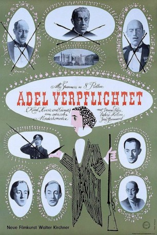

#5827 Adel verpflichtet
Alternativ: Kind Hearts and Coronets
 
 IMDB-Wertung: 8.1 / 10
IMDB-Wertung: 8.1 / 10  Metascore: 0
Metascore: 0 
Schwarze britische Komödie aus dem Jahr 1949. Der mittellose Louis Mazzini will aus Rache an das Erbe seiner reichen und unfreundlichen Verwandten. Dazu muss er aber erst acht von ihnen aus dem Weg räumen. Als er am Ziel ist, wird er festgenommen - für einen Mord den er nicht begangen hat. Alle acht Opfer wurden von Alec Guinness gespielt.
Jahr: 1949
Dauer: 106 Minuten
FSK: 16
Land: England Studio: Universal Pictures Home EntertainmentTonspuren: DD5.1 - ,
Untertitel: Englisch,
Auflösung: 1080p (1424x1080) Größe: 6860 MB
Genre: Komödie, Krimi
Regisseur: Robert Hamer
Drehbuch: Paddy Chayefsky
Soundtrack:
Darsteller:
- Dennis Price als Louis / Louis's father
- Valerie Hobson als Edith
- Joan Greenwood als Sibella
 Alec Guinness als The D'Ascoyne Family: The Duke / The Banker / The Parson / The General / The Admiral / Young Ascoyne / Young Henry / Lady Agatha
Alec Guinness als The D'Ascoyne Family: The Duke / The Banker / The Parson / The General / The Admiral / Young Ascoyne / Young Henry / Lady Agatha- Hugh Griffith als Lord High Steward
- Arthur Lowe als The Reporter
 Laurence Naismith als Warder in Jail , uncredited
Laurence Naismith als Warder in Jail , uncredited- Carol White als Young Sibella , uncredited
- Audrey Fildes als Mama
- Miles Malleson als The Hangman
- Clive Morton als The Prison Governor
- John Penrose als Lionel
- Cecil Ramage als Crown Counsel
- John Salew als Mr. Perkins
- Eric Messiter als Burgoyne
- Lyn Evans als The Farmer
- Barbara Leake als The Schoolmistress
- Peggy Ann Clifford als Maud
- Anne Valery als The Girl in the punt
- Stanley Beard als Warder , uncredited
- Maxwell Foster als Warder , uncredited
- Peter Gawthorne als First Lord Delivering Verdict , uncredited
- Molly Hamley-Clifford als Lady Redpole , uncredited
- Leslie Handford als Gamekeeper Hoskins , uncredited
- Nicholas Hill als Sergeant-at-Arms , uncredited
- Fletcher Lightfoot als Peer of the Realm , uncredited
- Cavan Malone als Young Graham , uncredited
- Gordon Phillott als Clerk of Parliament , uncredited
- Jeremy Spenser als Young Louis , uncredited
- Ivan Staff als Valuer , uncredited
- Richard Wattis als Defence Counsel , uncredited
Datei: X:\1900-1949\Adel verpflichtet (1949, FSK16, 1424x1080).mkv seit 26.03.2017
Festplatte: HD 1900-1970
 Es gibt insgesamt 80 Filme in der Gruppe '1900-1949'
Es gibt insgesamt 80 Filme in der Gruppe '1900-1949'